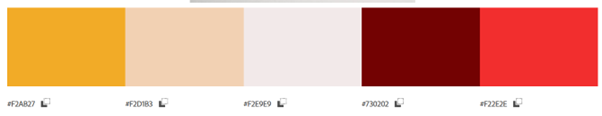

Pirtanauhalaskurin siemen kylvettiin viime syksynä, kun vedin Facebookissa pirtanauhan yhteiskudontaa. Osallistujat eivät olleet koskaan tehneet pirtanauhaa, joten kaikki piti opettaa - myös ne kaavat, joilla lasketaan loimen ja langan tarve. Löysin kyllä verkosta useita pirtanauhan suunnitteluun tarkoitettuja ohjelmia, joista yhdestä on tullut suosikkini, mutta kaikki lopettavat laskemisen viimeistään siinä vaiheessa, kun on raportoitu, montako punaista ja montako valkoista lankaa tarvitaan. Koodaamani laskuri yrittää vastata tähän tarpeeseen.
Kun yhtäkkiä ymmärsin, että voisin koodata laskurin harjoitustehtävänä, tein siitä pikaisen hahmotelman Moqupsilla. Sitten kävi niin, että toisella kurssilla piti tehdä käyttöliittymäsuunnittelua ja jotenkin sekin tuli tehtyä pirtanauhasta. Näin minulla oli käytössä valmis väripaletti. Se on tehty color.adobe.com-palvelun avulla suoraan laskurin taustana olevasta Suomen käsityön museon nauhakuvasta.
Koska epäilin, että projektin kanssa tulee kiire, valitsin ketterän kehityksen mallin: ensin koodi, jossa on perustoiminnallisuus, sitten ulkonäön viritys css-koodilla, lopuksi koodin hienosäätö. Perusmuotoista dokumentaatiota tein matkan varrella mahdollisimman paljon, koska sen kerääminen kasaan jälkikäteen on yleensä paljon tuskallisempaa.
Onneksi olin vahingossa suunnitellut systeemin, jonka alkupää oli helpompi koodata, niin tuli ensin harjoiteltua perusasioita. Ensimmäinen laskuri vain kysyy kaksi numeroa, suorittaa yksinkertaisen laskutoimituksen ja pulauttaa tuloksen ruudulle. Tuloksen kopiointi leikepöydällekin oli teoriassa helppoa, käytännössä ei. Lopulta ymmärsin muuntaa pituus-muuttujan arvon stringiksi ja homma alkoi toimia.
Toinen pätkä oli muuttujan pituus vaihtaminen komennosta. Peruskoodi syntyi aika vähällä, mutta uuden arvon tekeminen globaaliksi ei ollut onnistua. Jostain sitten löytyi kikka upituus = pituus;, jolla annettu uusi pituus pakotetaan globaaliksi, jotta se toimii seuraavassa vaiheessa oikein.
Kolmas osuus oli sitten haasteellisempi. Olisin voinut päättää, että pirtanauhassa on korkeintaan kuusi väriä ja tehdä kiinteän taulukon, mutta piti sitten nyhrätä kasaan dynaaminen taulukko. Rivin lisääminen ja rivin poistaminen oli vielä suhteellisen helppoa, mutta sitten olisi pitänyt saada joka solulle oma id ja entä jos välistä ottaakin rivin pois? Ja miten ne id:t ylipäänsä numeroidaan niin, että uuden rivin myötä tulee esimerkiksi sama id isommalla numerolla? Ja miten niitä sitten käytetään?
Tulostaulukko-ongelma ratkesi lopulta matriisilla. Ensin piti keksiä tai oikeastaan löytää ja soveltaa sellainen silmukka, jolla luetaan tiedot sarake kerrallaan jokaisen omaksi matriisikseen (vari_array[ ], lmaara_array[ ], tupla_array[ ]). Kaksi ensimmäistä eli lankaväri ja lankojen määrä luetaan sisään sellaisenaan, kolmas on tuplausvalinta ja jos sitä ei ole valittu, arvo on 1 ja jos se on valittu (checked), arvo on 2. Näistä sitten lasketaan seuraavalla silmukalla uusi matriisi pituus_array[ ], jossa siis kerrotaan loimen pituus lankamäärällä ja tarvittaessa vielä kahdella (jos tuplaus on päällä). Lopuksi koko roska jaetaan sadalla, jotta saadaan metrejä
Tässä vaiheessa minulla oli siis kaksi matriisia, joissa toisessa on langan väri ja toisessa tarvittava lankamäärä metreinä. Elämää helpotti se, että nämä matriisit ovat aina saman pituiset. Niissä voi olla tyhjiä arvoja, mutta ei tarvitse etsiskellä pidempää, pituusmitan silmukkaa varten voi ottaa kummasta vain. Sitten selvitin, miten matriisit yhdistetään vuorotellen matriisiksi t_array[ ]. Siitä saakin sitten parilla sisäkkäisellä silmukalla rakennettua valmiin html-taulukon.
Viimeisessä vaiheessa piti askarrella nappeja taulukon alle. Tein tulostuksen ihan peruskomennolla ja ajattelin säätää sitä css:n avulla. Tyhjennys oli vähän haastavampi, koska taulukon nollaaminen ei ollutkaan ihan pikkujuttu. Lopulta tajusin, että taulukko pitää poistaa alhaalta käsin, koska taulukon rivimäärä tietenkin pienenee aina, kun siitä ottaa rivin pois.
Helpoin homma koko koodaamisessa oli määräillä sitä, mitä rivejä milloinkin näytetään ja mitä poistetaan. Näin esimerkiksi tulostusnappi näytetään vasta, kun on jotain tulostettavaa.
Tuuppasin koodatun sivun netlify:hyn, jotta on ainakin jotain jätettävää. Muuten meni hienosti, mutta osa toiminnoista lakkasi käyttäytymästä. Melkoisen ähertämisen jälkeen ymmärsin, että tämä johtui välimuistista ja että se piti ohittaa location.reload-komennolla silloin, kun tiedot tyhjennetään. Komennon testaaminen paikallisesti oli erittäin hankalaa, mutta kun tuupppasin uuden koodin verkkoon, kaikki alkoi toimia eikä ole ryttyillyt sen jälkeen.
Kun peruskoodi vihdoin toimi, oli aika kerrata CSS:n käyttöä. Tämä oli paljon nopeampi operaatio, perusasiat on joskus kuitenkin osattu, ja värimaailma oli selvillä. Fontinkin vetäisin suoraan toista projektia varten kaivetusta listasta Top 10 Sans-Serif Fonts Used by Web Designers in 2022 - Roboto on Androidin fontti ja suosituin sans-serif, päätin olla sooloilematta ja otin sen. Sivulta löytyy kätevästi linkki Google Fontsiin ja siellä on hyvät ohjeet siitä, miten fontin saa sivustolleen (varalla on sitten Verdana, Arial, sans-serif).
Ylipäänsä ulkonäköpuolella on vähän mitään erityisen hienoa tai omituista. Olen jo vanhastaan tottunut tekemään kaiken mahdollisen tyylitiedostolla, joten itse html on ihan perusmallia. Jos ja kun laskuri tulee jollekin kotisivulleni verkkoon, on paljon helpompaa, kun sen saa yhtenäisen näköiseksi vain css-tiedostoa vaihtamalla ja vähän hienosäätämällä.
Huomasin itse koodausvaiheessa, että loppupäätä säätäessä on hyvin helppo unohtaa asettaa loimen pituus jollain tavalla ja sitten tuli kummallisia taulukoita ja laskutuloksia. Joten ensimmäisenä viritin kaikki skriptit tarkistamaan, että loimen pituudella on arvo välillä 10-2000. Alun loimilaskuri antaa virheilmoituksen, jos loimen pituutta ei ole, lisäloimen pituus saa olla tyhjä tai välillä 0-200. Toisen osuuden lankalaskuriin ei saa lisää rivejä, jos loimen pituutta ei ole annettu eikä se myöskään laske mitään, jos se ei tiedä loimen pituutta.
Taulukon validointi oli vaikeaa, kun soluilla ei ole id:tä. Pakollinen ja kiinteä ensimmäinen rivi on validoitu siten, että jos
sillä ei ole langan nimeä ollenkaan ja/tai lankamäärää, ei voi tehdä uusia rivejä eikä langan menekkiä lasketa vaan aina saa
virheilmoituksen. Osa validointiongelmasta ratkesi myös sillä, että määritin numeroruudut numeroiksi. Lisäksi menekkilaskuri
(funktio findData( )) antaa virheilmoituksen, jos lankamäärä ei ole välillä 1-100. Yli sataa yhtä
väriä ei pitäisi kenenkään tarvita, leveimmät suomalaiset pirtanauhat taitavat olla luokkaa 103-105 lankaa ja silloin värejä
on useampia.
Värin nimeksi voi nyt laittaa mitä vain, mutta se on oikeastaan vain käyttäjän ongelma. Yritin rajoittaa sen HTML5-koodilla
alfanumeeriseksi, mutta se ei onnistukaan tällaisessa lomakkeessa ihan noin vain eikä homman koodaaminen JavaScriptillä ole ihan
helppo nakki, niin jätin väliin.
Validoinnin pitäisi nyt olla siis sillä asteella, että aina on jotain laskettavaa ennen kuin laskurit oikeasti menevät päälle ja
että numeroiksi ei voi syöttää mitään ihan mahdotonta niin kuin vaikka negatiivista lankamäärää.
Tulostuksen huonous alkoi ärsyttää niin paljon, että päätin tehdä sen uusiksi. Oikeastihan käyttäjä tarvitsee vain sen ihan viimeisen taulukon ja varmistusluvut siitä alta, ei mitään muuta. Yhden div-elementin tulostaminen osoittautuikin sitten ihan äärelliseksi tehtäväksi, vaikeinta oli saada systeemi tekemään se tyylitiedoston kera, jotta esimerkiksi fonttivärit saatiin vaihdettua mustavalkotulostukseen sopiviksi.
Tämän jälkeen näpertelin vielä siellä täällä, viritin kaksi alinta nappia (Tulosta ja Tyhjennä) rinnakkain ja väkästelin tyhjän tilan kanssa ja kaikenlaista muuta pienempää, mutta siinä se nyt sitten oli. Vielä META-sivut kasaan ja video purkkiin ja tehtävä on tältä erää tehty.
Mitä vähemmän lahjakkaat ohjelmoijat ennen tekivät ennen kuin oli Googlea? Kai se oli vain sitten selvittävä O'Reillyn sarvikuonokirjalla ja räpellettävä parhaansa mukaan. En varsinaisesti kopioinut koodia mistään uusinta tulostuspätkää lukuunottamatta, mutta malleja, vinkkejä ja vastauksia ongelmiin etsin kyllä senkin edestä. Ainakin tässä vaiheessa "uraani" Olen ennemminkin sitkeä kuin lahjakas, ongelmanratkaisukyvyt kyllä kehittyivät projektin varrella aika lailla.
Toivomusten tynnyrihän on loputon, mutta se saa nyt odottaa aikaa parempaa. Kirjoitan kuitenkin tähän muistiin suunnitelmat, niin eivät pääse unohtumaan, jos tulee tauko koodauksessa.
Olen vakavasti sitä mieltä, että laskuri tulee tuotantokäyttöön. Minulla on tekeillä pirtanauhaa käsittelevä sivusta pirtanauha.blog,
mutta se on WordPressin palvelussa eikä tällä hetkellä ostamani Personal-paketti tue JavaScriptiä. Saattaa olla, että päivitän
palvelupaketin muista syistä ja silloin saan laskurinkin tuonne.
Toinen vaihtoehto on tuupata laskuri nyörihaarukkasivustolleni lucet.fi, joka tarvitsee epätoivoisesti ulkonäköremontin. Sivuston
on käsin koodattu eikä palvelinhotellilla ole mitään JavaScriptiä vastaan, joten sinne laskuri olisi helppo tipauttaa. Sille voisi
vaikka tehdä oman tyylitiedoston pirtanauha.blogia mukaellen (kun ensin saan siellä päätettyä, mitä teen) ja linkittää sieltä
takaisin pirtanauhasivustolle. Tämä olisi myös hyvä pika/väliaikaisratkaisu, voisin laittaa nyt tehdyn laskurin ja sen tyylitiedostot
ihan suoraan tuonne vaikka saman tien.
Vähän ajattelin, että kun tämä lopullinen tehtäväversio on valmis annan laskurin osoitteen yhteiskudontaryhmässä ja sanon, että saa testata. Olemme juuri saaneet valituksin mallin tämän kevään poimitun pirtanauhan yhteiskudontaan, joten loimen luominen alkaa olla ajankohtainen asia itse kullakin. Minä nyt varmaan vetäisen rullalangasta pöydän pituisen loimen mitään menekkiä laskematta, mutta jollakulla muulla voi olla tarve tarkistaa, riittääkö lanka vai pitääkö mennä kauppaan.